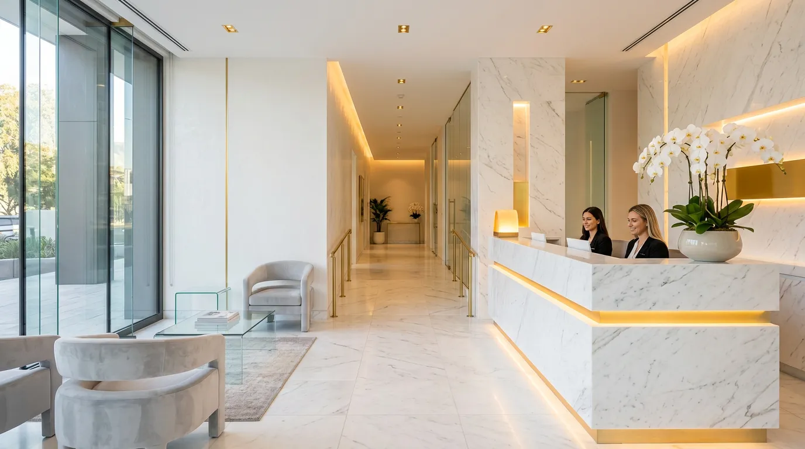
Treatment Menu
피부 타입과 고민에 맞춘 정밀 시술로
최적의 결과를 약속합니다.
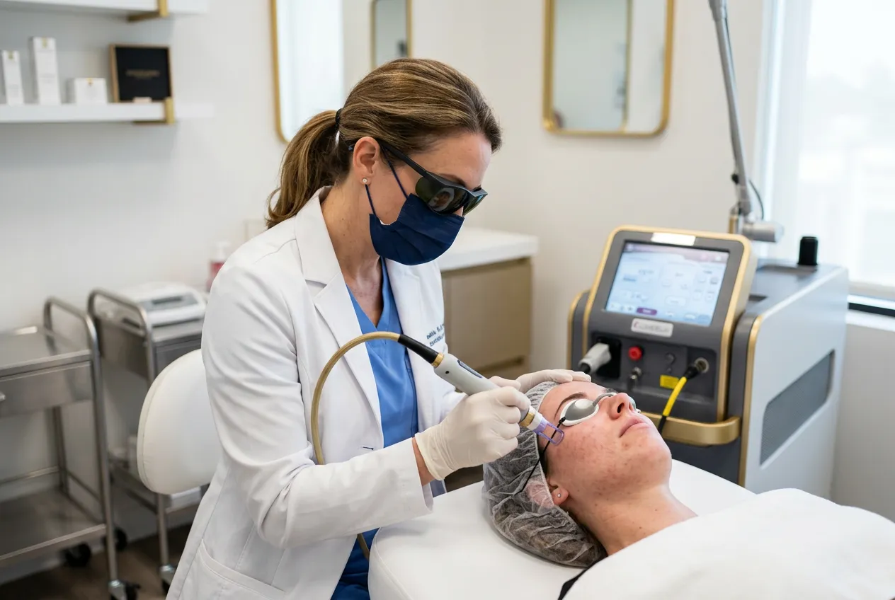
Laser & Tone
색소, 잡티, 모공 등 피부 톤 개선을 위한
맞춤 레이저 프로그램
₩150,000 – ₩300,000
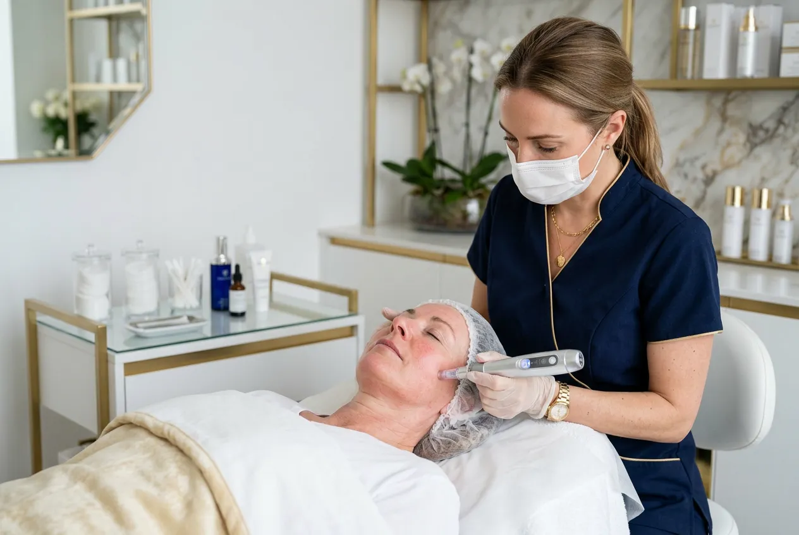
Anti-Aging
주름, 탄력, 볼륨 등 노화 징후에 맞춘
리프팅 & 재생 프로그램
₩200,000 – ₩500,000
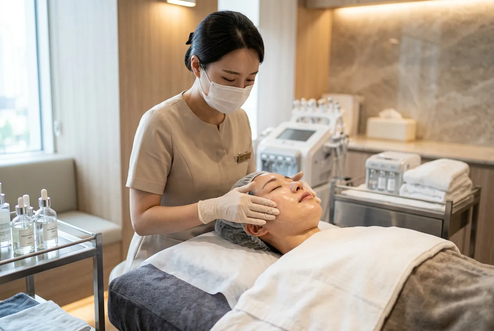
Skin Barrier
예민하고 손상된 피부를 위한
근본적인 장벽 회복 프로그램
₩80,000 – ₩150,000
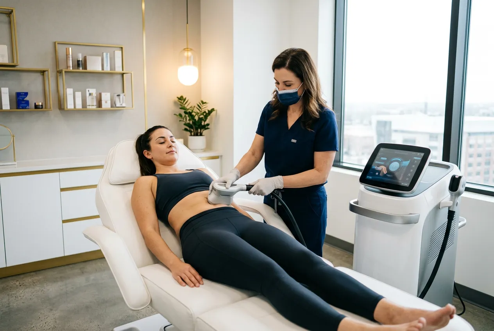
Body Contouring
비침습적 체형 관리 프로그램으로 자연스러운 바디라인을 완성합니다. 개인별 체형 분석 후 최적의 장비와 시술 조합을 설계합니다.
상담 예약Medical Director
이수연 원장은 서울대학교 의과대학을 졸업하고 대한피부과학회 정회원으로 활동하며, SCI 학술지에 12편의 논문을 게재한 피부과 전문의입니다.
"자연스러운 변화가 가장 아름다운 변화입니다."
Our Philosophy
루메르 클리닉은 '티 나지 않는 시술'을 지향합니다. 환자 개개인의 피부 상태와 얼굴 조화를 면밀히 분석하여, 과하지 않으면서도 확실한 변화를 만들어냅니다.
Treatment Process
체계적인 5단계 프로세스로
정확한 진단과 최적의 결과를 보장합니다.
Step 1
전화 또는 온라인으로 피부 고민을 먼저 공유해 주세요.
Step 2
첨단 피부 분석 장비로 피부 상태를 정확히 진단합니다.
Step 3
분석 결과를 바탕으로 개인별 최적 시술 플랜을 설계합니다.
Step 4
전문의가 직접 시술하며, 통증과 부작용을 최소화합니다.
Step 5
시술 후 경과를 체계적으로 관리하고 최적의 결과를 유지합니다.
Clinic Space
화이트 마블과 부드러운 조명으로 구성된
루메르 클리닉만의 프라이빗 공간입니다.
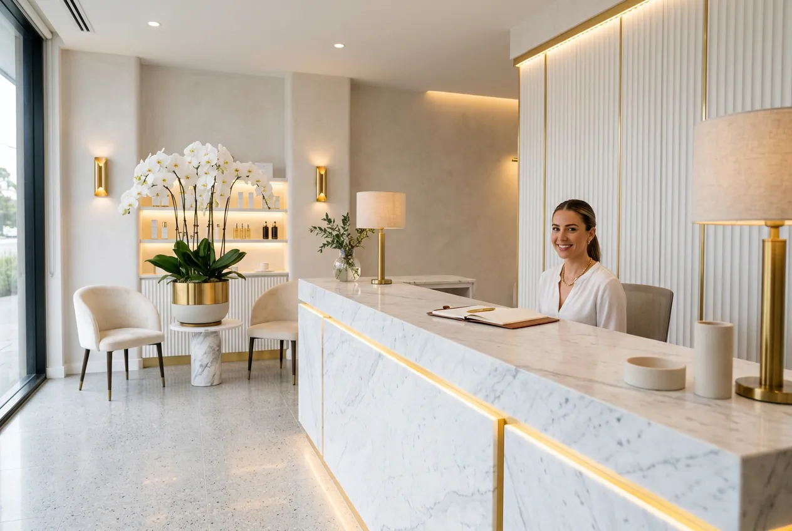
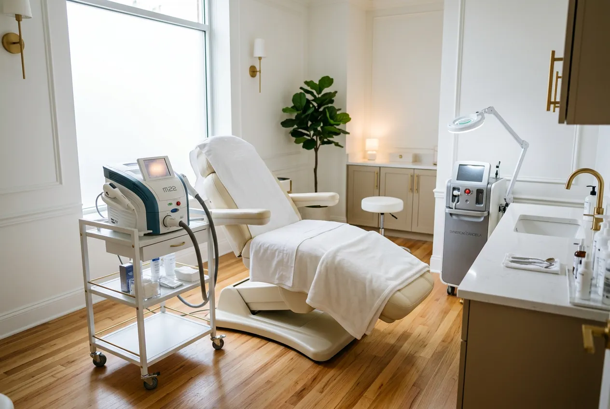
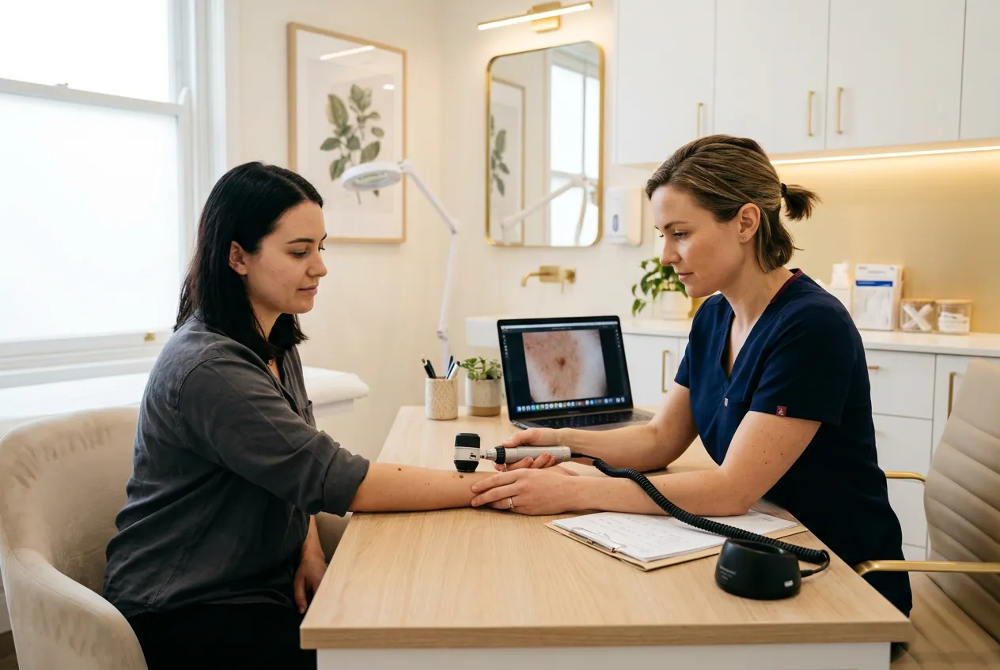
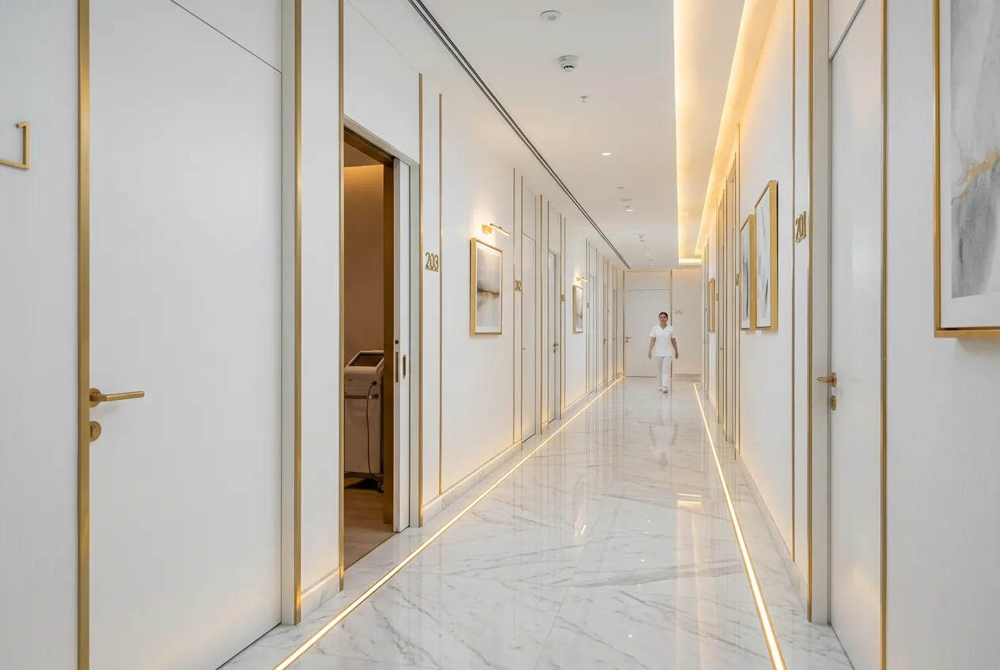
모든 시술실은 독립된 프라이빗 공간으로 구성되어 있습니다. 예약제 운영으로 대기 없는 편안한 진료를 경험하실 수 있습니다.
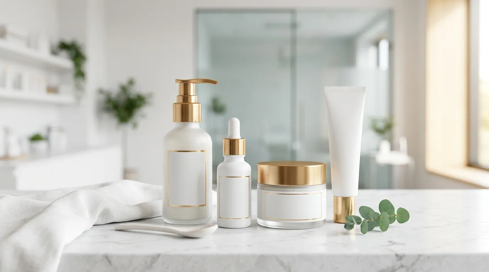
Lumère Derma Line
루메르 더마 라인은 시술 전후 피부 컨디션을 최적화하기 위해 개발된 전문 스킨케어입니다. 피부과 전문의가 직접 처방하는 맞춤 홈케어로 시술 효과를 극대화합니다.
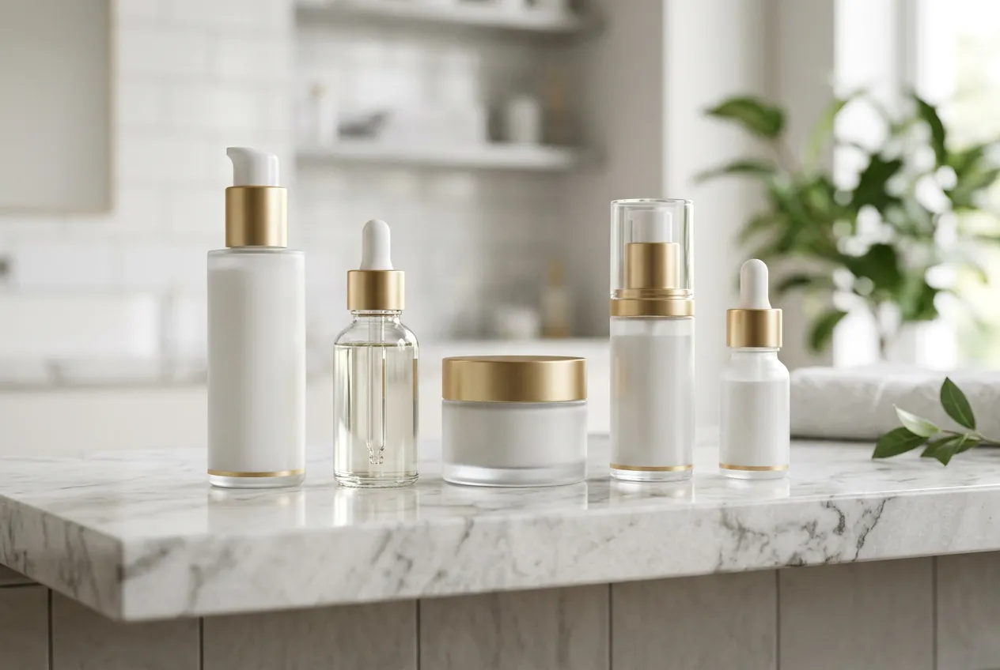
FAQ
시술 종류에 따라 다르지만, 대부분의 레이저 시술은 당일 일상생활이 가능합니다. 리프팅 시술의 경우 2~3일 정도 가벼운 붓기가 있을 수 있으며, 상세한 회복 기간은 상담 시 안내드립니다.
루메르 클리닉은 모든 시술 전 정밀 피부 분석을 진행하며, 환자의 피부 상태에 맞는 안전한 시술만 진행합니다. FDA 승인 장비만을 사용하고, 시술 후 경과 관찰까지 책임지는 시스템을 운영합니다.
네, 시술 목적에 따라 3회/5회/10회 패키지를 제공합니다. 패키지 이용 시 회당 비용이 절감되며, 첫 상담 시 패키지 할인 안내를 받으실 수 있습니다.
특별히 준비하실 것은 없습니다. 다만 현재 복용 중인 약이 있거나 피부 관련 병력이 있으시면 상담 시 말씀해 주시면 더 정확한 진단이 가능합니다. 메이크업은 하지 않고 오시는 것을 권장합니다.
서울 강남구 압구정로 12길 38 루메르빌딩 4층에 위치해 있습니다. 신사역 8번 출구에서 도보 5분 거리이며, 건물 내 무료 주차 2시간 이용 가능합니다.
평일 10:00~19:00, 토요일 10:00~15:00 (일요일·공휴일 휴진)으로 운영됩니다. 전화(02-543-8282), 카카오톡 채널, 또는 홈페이지를 통해 예약하실 수 있습니다.
오시는 길
서울 강남구 압구정로 12길 38
루메르빌딩 4층
전화 예약
02-543-8282
진료 시간
평일 10:00 – 19:00
토요일 10:00 – 15:00
일요일·공휴일 휴진
이메일
hello@lumere-clinic.kr
카카오톡 채널에서도 예약 가능합니다.
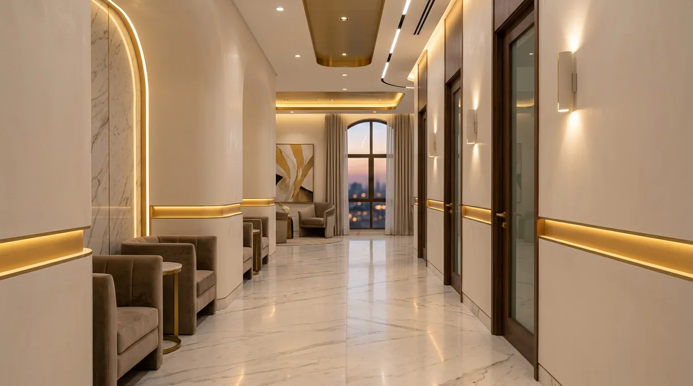
Book Your Consultation
루메르 클리닉의 전문 상담사가 당신의 피부 고민을
세심하게 듣고, 최적의 솔루션을 안내해 드립니다.